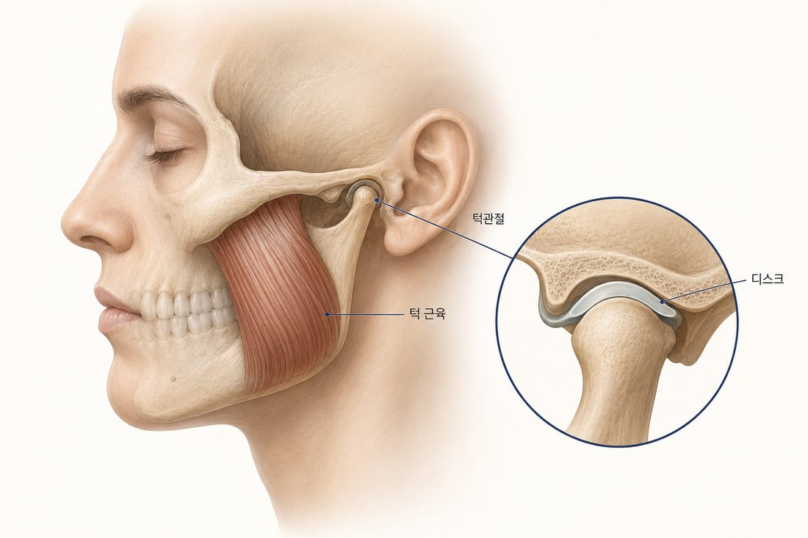
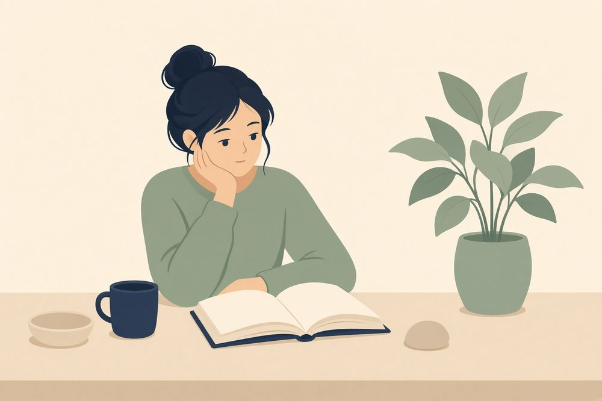

MEAW
MEAW귀 앞 작은 관절의 구조
턱관절에서는 아래턱뼈와 머리뼈 사이에 디스크(관절원판)가 있어 완충 역할을 합니다.
관절음과 잠김의 상당수가 이 디스크의 움직임과 관련됩니다. 다만 전부는 아니므로 검사로 구분합니다.

관절음이 생기는 과정
디스크가 앞으로 밀려나 있으면, 입을 벌릴 때 턱뼈가 디스크에 올라탔다가 내려오면서 딸깍 소리가 납니다. 아래는 정상과 변위된 움직임의 비교입니다.
무통성 관절음은 경과 관찰이 가능합니다
통증 없이 개구가 유지되는 관절음은 당장 치료 대상이 아닌 경우가 많습니다. 다음은 검사가 필요한 신호입니다.
- ✓소리와 함께 아프기 시작했을 때
- ✓걸리거나 잠기는 느낌이 함께 올 때
- ✓입이 전보다 덜 벌어질 때
- ✓소리가 잦아지거나 양상이 달라질 때
- ✓먹거나 말하기가 불편해질 때
"사각사각" 갈리는 소리라면
모래 갈리듯 거친 소리는 딸깍 소리와 성격이 다릅니다. 관절 면의 변화와 관련될 수 있어서, 진료는 소리의 종류를 구분하는 데서 시작합니다.
어떤 소리든 소리만으로 진단하지는 않습니다. 통증, 뻣뻣함, 물리는 느낌의 변화, 벌리기 어려움을 함께 살펴서 판단합니다.
개구장애의 세 가지 양상
비슷하게 느껴져도 원인과 대처가 다릅니다. 어느 쪽인지는 검사로 구분합니다.
닫힌 잠김
밀려난 디스크가 제자리로 돌아오지 못해, 입이 어느 선 이상 벌어지지 않는 상태입니다. 억지로 벌리면 아플 수 있습니다.
근육성 제한
디스크가 아니라 근육이 뭉치거나 아파서 입이 덜 벌어지는 경우입니다. 느낌은 잠김과 비슷해서 검사로 구분합니다.
열린 잠김
입이 벌어진 채 다물어지지 않는 상태입니다. 지속되면 탈구 가능성이 있어 즉시 진료 대상입니다.
잠김 상태별 대응
입이 닫힌 채 안 벌어진다면 억지로 벌리지 않습니다. 온찜질과 안정 후에도 풀리지 않으면 진료가 필요합니다.
입이 벌어진 채 다물어지지 않는다면 탈구 가능성이 있어 지체 없이 진료가 필요합니다.

시기에 따른 증상 변화
증상의 강도는 시기에 따라 변동하며, 대체로 아래 요인과 함께 움직입니다.
- ✓이 악물기, 이갈이
- ✓스트레스와 근육 긴장
- ✓오래 말하거나 질긴 것을 오래 씹는 일
- ✓수면의 질
- ✓목의 통증과 긴장
시간에 따른 변동 양상을 보면 어떤 요인이 영향을 주는지 가늠할 수 있습니다.